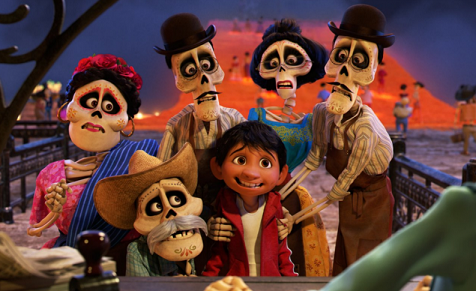
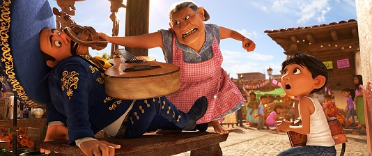
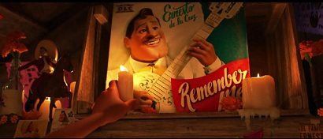
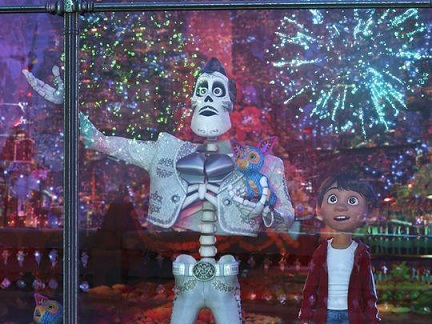
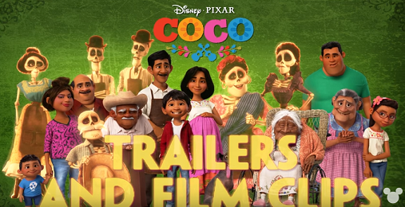

这是一年中唯一一个我们的祖先可以回来与我们相聚的日子。

-I thought it might have been one of those made-up things that adults told kids, like vitamins.
-Miguel, vitamins are a real thing.
-我以为那只是大人们编来唬小孩子的东西，就像维他命一样。
-米高，维他命不是瞎编的。
Tonight is about family.
今晚只为家人存在。
Music tore her family apart. Shoes brought them together.
她的家人因音乐而分离，因鞋子而重聚。

I am not like the rest of my family. There’s something that makes me different.
我和家里其他人不一样。一些东西使我与众不同。
I am gonna be a musician!
我要成为音乐家！
I have to sing. I have to play!
我注定要唱歌。我注定要演奏！
The music, it’s not just in me, it is me.
音乐，不只是我的一部分，它就是我。

When life gets me down, I play my guitar.
当生活使我沮丧的时候，我就弹吉他。
The rest of the world may follow the rules, but I must follow my heart!
其他人遵从规矩，而我听从内心。
Never underestimate the power of music.
永远不要低估音乐的力量。
No one was going to hand me my future. It was up to me to reach for my dream. Grab it tight, and make it come true.
没有人会把未来放在我手上。要不要追求梦想完全取决于我自己。牢握它，实现它。

Success doesn’t come for free. You have to do whatever it takes to seize your moment.
成功不会平白无故实现。在那之前你必须拼尽全力把握每一刻。
One can not deny who one is meant to be.
你无法违抗成为自己注定要成为的那种人。
Now you must make a choice.
现在你必须做出抉择了。

We may have differences, but nothing is more important than family.
我们可能产生分歧，但没有什么能比家人重要。
When there’s no one left in the living world who remembers you, you disappear from this world.
当人世间没有人再记住你的时候，你就会从这个亡灵的世界消失。
Never forget how much your family loves you.
永远不要忘记你的家人有多爱你。
